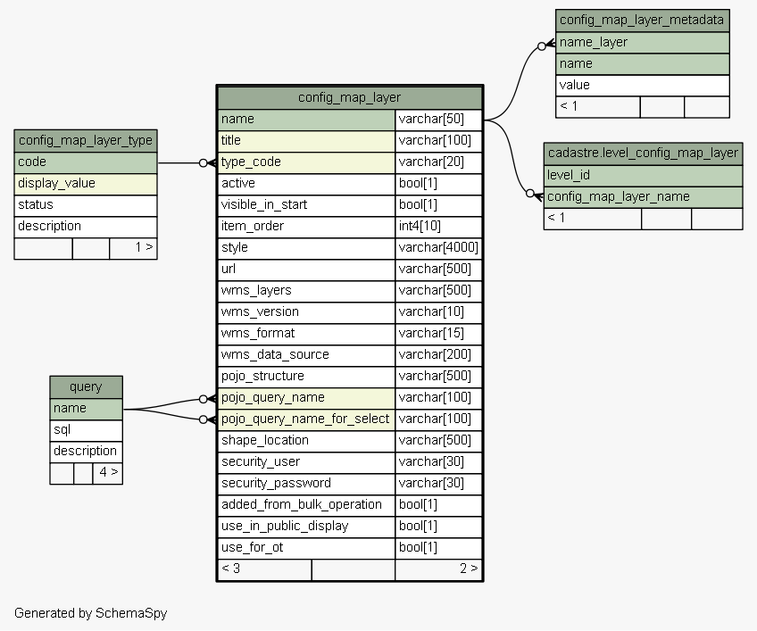
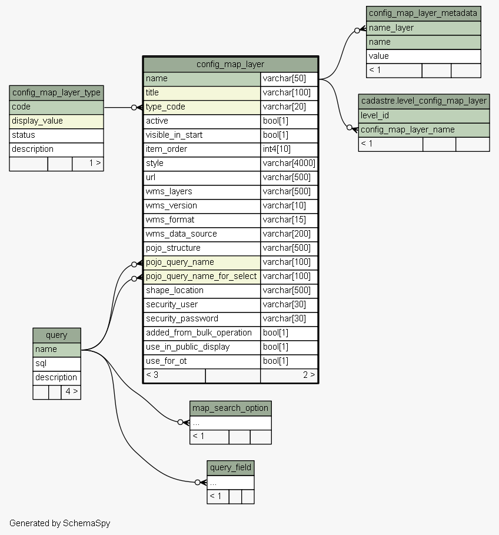

| Table sola.system.config_map_layer Identifies the layers available for display in the SOLA Map Viewer. Tags: FLOSS SOLA Extension, Reference Table, Map Configuration
|
Generated by SchemaSpy |
| ||||||||||||||||||||||||||||||||||||||||||||||||||||||||||||||||||||||||||||||||||||||||||||||||||||||||||||||||||||||||||||||||||||||||||||||||||||||||||||||||||||||||||||||||||||||||||||||||||||||||||||||||
Analyzed at Tue May 31 09:59 NZST 2016 | ||||||||||||||||||||||||||||||||||||||||||||||||||||||||||||||||||||||||||||||||||||||||||||||||||||||||||||||||||||||||||||||||||||||||||||||||||||||||||||||||||||||||||||||||||||||||||||||||||||||||||||||||
Indexes:
| Column(s) | Type | Sort | Constraint Name |
|---|---|---|---|
| name | Primary key | Asc | config_map_layer_pkey |
| pojo_query_name | Performance | Asc | config_map_layer_pojo_query_name_fk105_ind |
| pojo_query_name_for_select | Performance | Asc | config_map_layer_pojo_query_name_for_select_fk106_ind |
| title | Must be unique | Asc | config_map_layer_title_unique |
| type_code | Performance | Asc | config_map_layer_type_code_fk104_ind |
|
  |
Excluded from diagram's relationships: approle_appgroup.change_action user_pword_expiry.pword_change_user appuser.change_action appuser_appgroup.change_action appuser.change_user appuser_appgroup.change_time appuser.rowidentifier approle_appgroup.rowidentifier appuser_appgroup.change_user extracted_rows.rowidentifier appuser_appgroup.rowversion approle_appgroup.change_user appuser_appgroup.rowidentifier approle_appgroup.rowversion appuser.rowversion approle_appgroup.change_time appuser.change_time